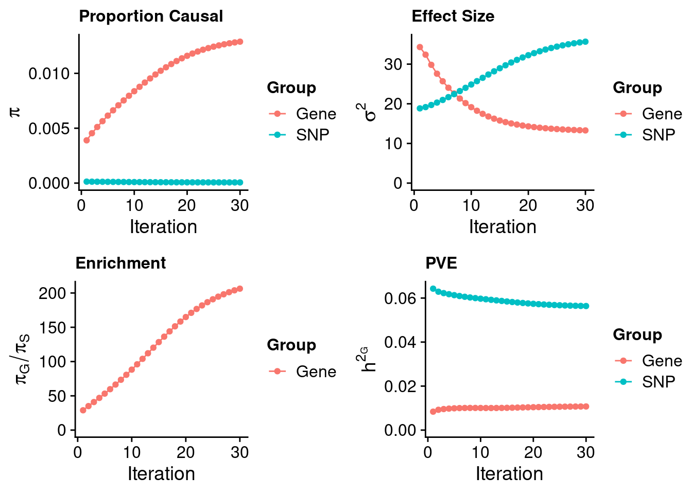
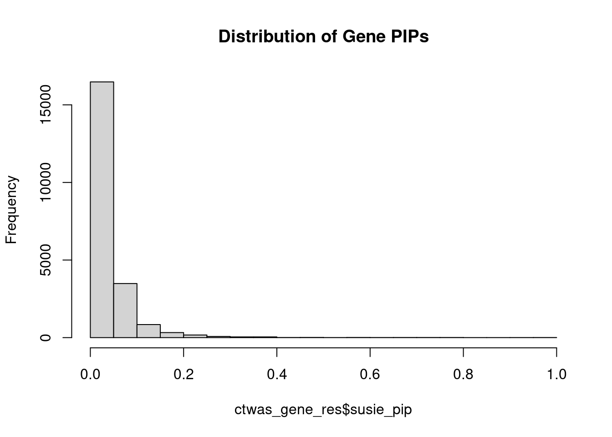
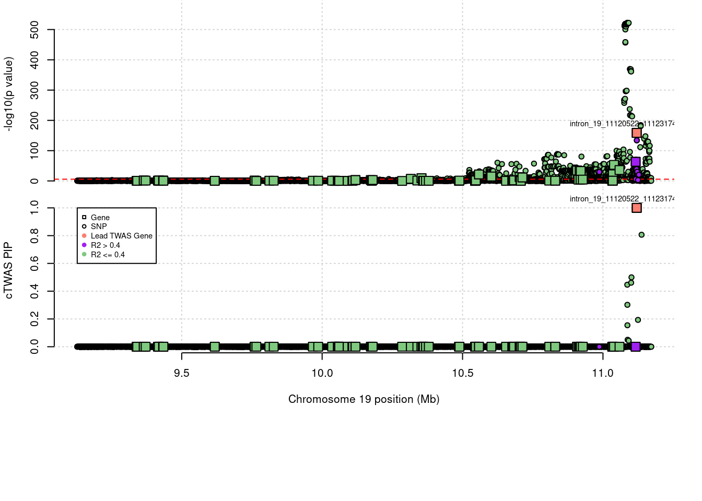

Last updated: 2022-10-18
Checks: 5 2
Knit directory: cTWAS_analysis/
This reproducible R Markdown analysis was created with workflowr (version 1.7.0). The Checks tab describes the reproducibility checks that were applied when the results were created. The Past versions tab lists the development history.
The R Markdown file has unstaged changes. To know which version of the R Markdown file created these results, you’ll want to first commit it to the Git repo. If you’re still working on the analysis, you can ignore this warning. When you’re finished, you can run wflow_publish to commit the R Markdown file and build the HTML.
Great job! The global environment was empty. Objects defined in the global environment can affect the analysis in your R Markdown file in unknown ways. For reproduciblity it’s best to always run the code in an empty environment.
The command set.seed(20211220) was run prior to running the code in the R Markdown file. Setting a seed ensures that any results that rely on randomness, e.g. subsampling or permutations, are reproducible.
Great job! Recording the operating system, R version, and package versions is critical for reproducibility.
Nice! There were no cached chunks for this analysis, so you can be confident that you successfully produced the results during this run.
Using absolute paths to the files within your workflowr project makes it difficult for you and others to run your code on a different machine. Change the absolute path(s) below to the suggested relative path(s) to make your code more reproducible.
| absolute | relative |
|---|---|
| /project2/xinhe/shengqian/cTWAS/cTWAS_analysis/data/ | data |
| /project2/xinhe/shengqian/cTWAS/cTWAS_analysis/code/ctwas_config_b38.R | code/ctwas_config_b38.R |
Great! You are using Git for version control. Tracking code development and connecting the code version to the results is critical for reproducibility.
The results in this page were generated with repository version 78f8664. See the Past versions tab to see a history of the changes made to the R Markdown and HTML files.
Note that you need to be careful to ensure that all relevant files for the analysis have been committed to Git prior to generating the results (you can use wflow_publish or wflow_git_commit). workflowr only checks the R Markdown file, but you know if there are other scripts or data files that it depends on. Below is the status of the Git repository when the results were generated:
Ignored files:
Ignored: .Rhistory
Ignored: .ipynb_checkpoints/
Untracked files:
Untracked: Proposal plots.R
Untracked: RGS14.pdf
Untracked: RNF186.pdf
Untracked: SCZ_annotation.xlsx
Untracked: SLC8B1.pdf
Untracked: UKB_analysis_allweights_scz/
Untracked: analysis/.ipynb_checkpoints/
Untracked: cache/
Untracked: code/.ipynb_checkpoints/
Untracked: code/IBD_ME_3kb_0.05_out/
Untracked: code/LDL_S_out/LDL_Liver.err
Untracked: code/LDL_S_out/LDL_Liver.out
Untracked: code/LDL_out/
Untracked: code/run_IBD_analysis_ME_3kb_0.05.sbatch
Untracked: code/run_IBD_analysis_ME_3kb_0.05.sh
Untracked: code/run_IBD_ctwas_rss_LDR_ME_3kb_0.05.R
Untracked: code/run_LDL_analysis.sbatch
Untracked: code/run_LDL_analysis.sh
Untracked: code/run_LDL_ctwas_rss_LDR.R
Untracked: data/.ipynb_checkpoints/
Untracked: data/FUMA_output/
Untracked: data/GO_Terms/
Untracked: data/IBD_ME/
Untracked: data/LDL/
Untracked: data/LDL_S/
Untracked: data/PGC3_SCZ_wave3_public.v2.tsv
Untracked: data/SCZ/
Untracked: data/SCZ_2014_EUR/
Untracked: data/SCZ_2014_EUR_ME/
Untracked: data/SCZ_2018/
Untracked: data/SCZ_2018_ME/
Untracked: data/SCZ_2018_S/
Untracked: data/SCZ_2020/
Untracked: data/SCZ_S/
Untracked: data/Supplementary Table 15 - MAGMA.xlsx
Untracked: data/Supplementary Table 20 - Prioritised Genes.xlsx
Untracked: data/UKBB/
Untracked: data/UKBB_SNPs_Info.text
Untracked: data/gene_OMIM.txt
Untracked: data/gene_pip_0.8.txt
Untracked: data/gwas_sumstats/
Untracked: data/magma.genes.out
Untracked: data/mashr_Heart_Atrial_Appendage.db
Untracked: data/mashr_sqtl/
Untracked: data/notes.txt
Untracked: data/scz_2018.RDS
Untracked: data/summary_known_genes_annotations.xlsx
Untracked: temp_LDR/
Untracked: top_genes_32.txt
Untracked: top_genes_37.txt
Untracked: top_genes_43.txt
Untracked: top_genes_54.txt
Untracked: top_genes_81.txt
Untracked: z_snp_pos_SCZ.RData
Untracked: z_snp_pos_SCZ_2014_EUR.RData
Untracked: z_snp_pos_SCZ_2018.RData
Untracked: z_snp_pos_SCZ_2020.RData
Unstaged changes:
Deleted: analysis/BMI_S_results.Rmd
Modified: analysis/LDL_Liver.Rmd
Modified: analysis/LDL_Liver_S.Rmd
Deleted: code/LDL_S_out/T2D_Liver.err
Deleted: code/LDL_S_out/T2D_Liver.out
Modified: code/SCZ_out/SCZ_Brain_Amygdala.err
Modified: code/SCZ_out/SCZ_Brain_Amygdala.out
Modified: code/SCZ_out/SCZ_Brain_Anterior_cingulate_cortex_BA24.err
Modified: code/SCZ_out/SCZ_Brain_Anterior_cingulate_cortex_BA24.out
Modified: code/SCZ_out/SCZ_Brain_Caudate_basal_ganglia.err
Modified: code/SCZ_out/SCZ_Brain_Caudate_basal_ganglia.out
Modified: code/SCZ_out/SCZ_Brain_Cerebellar_Hemisphere.err
Modified: code/SCZ_out/SCZ_Brain_Cerebellar_Hemisphere.out
Modified: code/SCZ_out/SCZ_Brain_Cerebellum.err
Modified: code/SCZ_out/SCZ_Brain_Cerebellum.out
Modified: code/SCZ_out/SCZ_Brain_Cortex.err
Modified: code/SCZ_out/SCZ_Brain_Cortex.out
Modified: code/SCZ_out/SCZ_Brain_Frontal_Cortex_BA9.err
Modified: code/SCZ_out/SCZ_Brain_Frontal_Cortex_BA9.out
Modified: code/SCZ_out/SCZ_Brain_Hippocampus.err
Modified: code/SCZ_out/SCZ_Brain_Hippocampus.out
Modified: code/SCZ_out/SCZ_Brain_Hypothalamus.err
Modified: code/SCZ_out/SCZ_Brain_Hypothalamus.out
Modified: code/SCZ_out/SCZ_Brain_Nucleus_accumbens_basal_ganglia.err
Modified: code/SCZ_out/SCZ_Brain_Nucleus_accumbens_basal_ganglia.out
Modified: code/SCZ_out/SCZ_Brain_Putamen_basal_ganglia.err
Modified: code/SCZ_out/SCZ_Brain_Putamen_basal_ganglia.out
Modified: code/SCZ_out/SCZ_Brain_Spinal_cord_cervical_c-1.err
Modified: code/SCZ_out/SCZ_Brain_Spinal_cord_cervical_c-1.out
Modified: code/SCZ_out/SCZ_Brain_Substantia_nigra.err
Modified: code/SCZ_out/SCZ_Brain_Substantia_nigra.out
Deleted: code/run_IBD_ctwas_rss_LDR_ME.R
Modified: code/run_LDL_analysis_S.sbatch
Modified: code/run_LDL_analysis_S.sh
Modified: code/run_LDL_ctwas_rss_LDR_S.R
Modified: code/run_SCZ_analysis.sbatch
Modified: code/run_SCZ_analysis.sh
Modified: code/run_SCZ_ctwas_rss_LDR.R
Note that any generated files, e.g. HTML, png, CSS, etc., are not included in this status report because it is ok for generated content to have uncommitted changes.
These are the previous versions of the repository in which changes were made to the R Markdown (analysis/LDL_Liver_S.Rmd) and HTML (docs/LDL_Liver_S.html) files. If you’ve configured a remote Git repository (see ?wflow_git_remote), click on the hyperlinks in the table below to view the files as they were in that past version.
| File | Version | Author | Date | Message |
|---|---|---|---|---|
| Rmd | 6a4ec7a | sq-96 | 2022-10-18 | updtae |
| html | 6a4ec7a | sq-96 | 2022-10-18 | updtae |
| Rmd | 601071b | sq-96 | 2022-03-01 | adadwd |
| html | 143efdd | sq-96 | 2022-02-22 | Build site. |
| Rmd | fe3e6a4 | sq-96 | 2022-02-22 | update |
#number of imputed weights
nrow(qclist_all)[1] 21553#number of imputed weights by chromosome
table(qclist_all$chr)
1 2 3 4 5 6 7 8 9 10 11 12 13 14 15 16
2079 1523 1276 769 878 1116 1176 701 854 931 1344 1116 391 772 677 1085
17 18 19 20 21 22
1462 258 1524 659 262 700 #number of imputed weights without missing variants
sum(qclist_all$nmiss==0)[1] 19937#proportion of imputed weights without missing variants
mean(qclist_all$nmiss==0)[1] 0.925library(reticulate)
use_python("/scratch/midway2/shengqian/miniconda3/envs/PythonForR/bin/python",required=T)finish#add z scores to results
load(paste0(results_dir, "/", analysis_id, "_expr_z_gene.Rd"))
ctwas_gene_res <- py$ctwas_gene_res_df
ctwas_gene_res$z <- z_gene[ctwas_gene_res$id,]$z
z_snp <- z_snp[z_snp$id %in% ctwas_snp_res$id,]
ctwas_snp_res$z <- z_snp$z[match(ctwas_snp_res$id, z_snp$id)]
#merge gene and snp results with added information
#ctwas_gene_res$genename=NA
#ctwas_gene_res$gene_type=NA
ctwas_snp_res$genename=NA
ctwas_snp_res$gene_type=NA
ctwas_gene_res = ctwas_gene_res[,!(colnames(ctwas_gene_res) %in% c("intron_start", "intron_end","intron_id"))]
ctwas_res <- rbind(ctwas_gene_res,
ctwas_snp_res[,colnames(ctwas_gene_res)])
#get number of sQTL for geens
num_sqtl <- c()
for (i in 1:22){
load(paste0(results_dir, "/", analysis_id, "_expr_chr", i, ".exprqc.Rd"))
num_sqtl <- c(num_sqtl, unlist(lapply(wgtlist, nrow)))
}
ctwas_gene_res$num_sqtl <- num_sqtl[ctwas_gene_res$id]
#store columns to report
report_cols <- colnames(ctwas_gene_res)[!(colnames(ctwas_gene_res) %in% c("type", "region_tag1", "region_tag2", "cs_index", "gene_type", "z_flag"))]
first_cols <- c("genename", "region_tag")
report_cols <- c(first_cols, report_cols[!(report_cols %in% first_cols)])
report_cols_snps <- c("id", report_cols[-1])
report_cols_snps <- report_cols_snps[!(report_cols_snps %in% "num_sqtl")]
#get number of SNPs from s1 results; adjust for thin argument
ctwas_res_s1 <- data.table::fread(paste0(results_dir, "/", analysis_id, "_ctwas.s1.susieIrss.txt"))
n_snps <- sum(ctwas_res_s1$type=="SNP")/thin
rm(ctwas_res_s1)library(ggplot2)
library(cowplot)
load(paste0(results_dir, "/", analysis_id, "_ctwas.s2.susieIrssres.Rd"))
group_size <- c(nrow(ctwas_gene_res), n_snps)
#estimated group prior (all iterations)
estimated_group_prior_all <- group_prior_rec
rownames(estimated_group_prior_all) <- c("gene", "snp")
estimated_group_prior_all["snp",] <- estimated_group_prior_all["snp",]*thin #adjust parameter to account for thin argument
#estimated group prior variance (all iterations)
estimated_group_prior_var_all <- group_prior_var_rec
rownames(estimated_group_prior_var_all) <- c("gene", "snp")
#estimated group PVE (all iterations)
estimated_group_pve_all <- estimated_group_prior_var_all*estimated_group_prior_all*group_size/sample_size #check PVE calculation
rownames(estimated_group_pve_all) <- c("gene", "snp")
#estimated enrichment of genes (all iterations)
estimated_enrichment_all <- estimated_group_prior_all["gene",]/estimated_group_prior_all["snp",]
title_size <- 12
df <- data.frame(niter = rep(1:ncol(estimated_group_prior_all), 2),
value = c(estimated_group_prior_all["gene",], estimated_group_prior_all["snp",]),
group = rep(c("Gene", "SNP"), each = ncol(estimated_group_prior_all)))
df$group <- as.factor(df$group)
p_pi <- ggplot(df, aes(x=niter, y=value, group=group)) +
geom_line(aes(color=group)) +
geom_point(aes(color=group)) +
xlab("Iteration") + ylab(bquote(pi)) +
ggtitle("Proportion Causal") +
theme_cowplot()
p_pi <- p_pi + theme(plot.title=element_text(size=title_size)) +
expand_limits(y=0) +
guides(color = guide_legend(title = "Group")) + theme (legend.title = element_text(size=12, face="bold"))
df <- data.frame(niter = rep(1:ncol(estimated_group_prior_var_all ), 2),
value = c(estimated_group_prior_var_all["gene",], estimated_group_prior_var_all["snp",]),
group = rep(c("Gene", "SNP"), each = ncol(estimated_group_prior_var_all)))
df$group <- as.factor(df$group)
p_sigma2 <- ggplot(df, aes(x=niter, y=value, group=group)) +
geom_line(aes(color=group)) +
geom_point(aes(color=group)) +
xlab("Iteration") + ylab(bquote(sigma^2)) +
ggtitle("Effect Size") +
theme_cowplot()
p_sigma2 <- p_sigma2 + theme(plot.title=element_text(size=title_size)) +
expand_limits(y=0) +
guides(color = guide_legend(title = "Group")) + theme (legend.title = element_text(size=12, face="bold"))
df <- data.frame(niter = rep(1:ncol(estimated_group_pve_all ), 2),
value = c(estimated_group_pve_all["gene",], estimated_group_pve_all["snp",]),
group = rep(c("Gene", "SNP"), each = ncol(estimated_group_pve_all)))
df$group <- as.factor(df$group)
p_pve <- ggplot(df, aes(x=niter, y=value, group=group)) +
geom_line(aes(color=group)) +
geom_point(aes(color=group)) +
xlab("Iteration") + ylab(bquote(h^2[G])) +
ggtitle("PVE") +
theme_cowplot()
p_pve <- p_pve + theme(plot.title=element_text(size=title_size)) +
expand_limits(y=0) +
guides(color = guide_legend(title = "Group")) + theme (legend.title = element_text(size=12, face="bold"))
df <- data.frame(niter = 1:length(estimated_enrichment_all),
value = estimated_enrichment_all,
group = rep("Gene", length(estimated_enrichment_all)))
df$group <- as.factor(df$group)
p_enrich <- ggplot(df, aes(x=niter, y=value, group=group)) +
geom_line(aes(color=group)) +
geom_point(aes(color=group)) +
xlab("Iteration") + ylab(bquote(pi[G]/pi[S])) +
ggtitle("Enrichment") +
theme_cowplot()
p_enrich <- p_enrich + theme(plot.title=element_text(size=title_size)) +
expand_limits(y=0) +
guides(color = guide_legend(title = "Group")) + theme (legend.title = element_text(size=12, face="bold"))
plot_grid(p_pi, p_sigma2, p_enrich, p_pve)
#estimated group prior
estimated_group_prior <- estimated_group_prior_all[,ncol(group_prior_rec)]
print(estimated_group_prior) gene snp
1.289e-02 6.246e-05 #estimated group prior variance
estimated_group_prior_var <- estimated_group_prior_var_all[,ncol(group_prior_var_rec)]
print(estimated_group_prior_var) gene snp
13.29 35.66 #estimated enrichment
estimated_enrichment <- estimated_enrichment_all[ncol(group_prior_var_rec)]
print(estimated_enrichment)[1] 206.3#report sample size
print(sample_size)[1] 343621#report group size
print(group_size)[1] 21553 8696600#estimated group PVE
estimated_group_pve <- estimated_group_pve_all[,ncol(group_prior_rec)] #check PVE calculation
print(estimated_group_pve) gene snp
0.01074 0.05638 #compare sum(PIP*mu2/sample_size) with above PVE calculation
#c(sum(ctwas_gene_res$PVE),sum(ctwas_snp_res$PVE))
#total PVE
sum(estimated_group_pve)[1] 0.06712#PVE attributable to gene expression
estimated_group_pve["gene"]/sum(estimated_group_pve)gene
0.16 #distribution of PIPs
hist(ctwas_gene_res$susie_pip, xlim=c(0,1), main="Distribution of Gene PIPs")
| Version | Author | Date |
|---|---|---|
| 6a4ec7a | sq-96 | 2022-10-18 |
#genes with PIP>0.8 or 20 highest PIPs
head(ctwas_gene_res[order(-ctwas_gene_res$susie_pip),report_cols], max(sum(ctwas_gene_res$susie_pip>0.8), 20)) genename region_tag chrom id pos
21159 LDLR 19_9 19 intron_19_11120522_11123174 11120205
20916 HP 16_38 16 intron_16_72057466_72058254 72072066
20403 HLA-B 6_25 6 intron_6_31270085_31355317 31272369
20643 LRCH4 7_61 7 intron_7_100575304_100575705 100574936
20876 ITGAL 16_24 16 intron_16_30505462_30506715 30506720
21422 BCAT2 19_34 19 intron_19_48800297_48810984 48800483
20697 KIF13B 8_28 8 intron_8_29092878_29099133 29092792
20738 ST3GAL4 11_77 11 intron_11_126356302_126406096 126355981
20310 USP53 4_77 4 intron_4_119217673_119220116 119220165
21414 SPHK2 19_33 19 intron_19_48624430_48625891 48624233
20748 PHC1 12_9 12 intron_12_8921750_8922633 8922098
20245 SPRED2 2_42 2 intron_2_65314169_65316734 65314461
21287 CYP4F12 19_13 19 intron_19_15685197_15696430 15685032
20986 ABCA8 17_39 17 intron_17_68883882_68884331 68883786
20267 UGT1A1 2_137 2 intron_2_233761151_233767034 233761240
20776 R3HDM2 12_36 12 intron_12_57395818_57430720 57395576
410 KDM1A 1_16 1 intron_1_23030634_23050387 23030789
6609 ZSCAN31 6_22 6 intron_6_28327533_28329303 28327111
18354 ZNF227 19_30 19 intron_19_44213244_44217791 44213516
20954 FLOT2 17_17 17 intron_17_28889026_28897526 28889154
susie_pip mu2 PVE z num_sqtl
21159 1.0000 751.97 2.188e-03 26.898 2
20916 0.9933 272.19 7.868e-04 21.869 2
20403 0.9914 62.55 1.805e-04 8.790 4
20643 0.9895 31.67 9.119e-05 5.294 2
20876 0.9618 21.82 6.107e-05 -4.428 1
21422 0.9583 27.94 7.792e-05 -5.197 1
20697 0.9476 23.56 6.496e-05 -4.718 1
20738 0.9427 76.58 2.101e-04 -12.154 2
20310 0.9392 26.01 7.110e-05 4.888 1
21414 0.9138 42.12 1.120e-04 8.721 1
20748 0.9054 36.98 9.744e-05 6.156 1
20245 0.8639 22.11 5.558e-05 -4.438 1
21287 0.8606 36.25 9.079e-05 -5.868 2
20986 0.8284 27.86 6.717e-05 -4.775 2
20267 0.8104 30.83 7.271e-05 5.450 1
20776 0.8029 36.25 8.469e-05 -5.818 1
410 0.7924 20.69 4.772e-05 4.158 1
6609 0.7913 24.62 5.670e-05 2.711 1
18354 0.7903 30.19 6.943e-05 4.698 1
20954 0.7864 26.93 6.162e-05 -3.738 1#set nominal signifiance threshold for z scores
alpha <- 0.05
#bonferroni adjusted threshold for z scores
sig_thresh <- qnorm(1-(alpha/nrow(ctwas_gene_res)/2), lower=T)Loading required package: S4VectorsLoading required package: stats4Loading required package: BiocGenerics
Attaching package: 'BiocGenerics'The following objects are masked from 'package:stats':
IQR, mad, sd, var, xtabsThe following objects are masked from 'package:base':
anyDuplicated, append, as.data.frame, basename, cbind, colnames,
dirname, do.call, duplicated, eval, evalq, Filter, Find, get, grep,
grepl, intersect, is.unsorted, lapply, Map, mapply, match, mget,
order, paste, pmax, pmax.int, pmin, pmin.int, Position, rank,
rbind, Reduce, rownames, sapply, setdiff, sort, table, tapply,
union, unique, unsplit, which.max, which.min
Attaching package: 'S4Vectors'The following object is masked from 'package:base':
expand.gridLoading required package: IRangesLoading required package: GenomicRangesLoading required package: GenomeInfoDbLoading required package: grida <- locus_plot_final_pub(region_tag="19_9", return_table=T,
focus=NULL,
label_genes=NULL,
rerun_ctwas=F,
rerun_load_only=F,
label_panel="both",
legend_side="left",
legend_panel="cTWAS")
sessionInfo()R version 4.1.0 (2021-05-18)
Platform: x86_64-pc-linux-gnu (64-bit)
Running under: Scientific Linux 7.4 (Nitrogen)
Matrix products: default
BLAS/LAPACK: /software/openblas-0.3.13-el7-x86_64/lib/libopenblas_haswellp-r0.3.13.so
locale:
[1] LC_CTYPE=en_US.UTF-8 LC_NUMERIC=C
[3] LC_TIME=en_US.UTF-8 LC_COLLATE=en_US.UTF-8
[5] LC_MONETARY=en_US.UTF-8 LC_MESSAGES=en_US.UTF-8
[7] LC_PAPER=en_US.UTF-8 LC_NAME=C
[9] LC_ADDRESS=C LC_TELEPHONE=C
[11] LC_MEASUREMENT=en_US.UTF-8 LC_IDENTIFICATION=C
attached base packages:
[1] grid stats4 stats graphics grDevices utils datasets
[8] methods base
other attached packages:
[1] Gviz_1.38.4 GenomicRanges_1.46.0 GenomeInfoDb_1.26.7
[4] IRanges_2.24.1 S4Vectors_0.28.1 BiocGenerics_0.40.0
[7] cowplot_1.1.1 ggplot2_3.3.6 reticulate_1.26
[10] workflowr_1.7.0
loaded via a namespace (and not attached):
[1] backports_1.2.1 Hmisc_4.5-0
[3] BiocFileCache_2.2.0 lazyeval_0.2.2
[5] splines_4.1.0 BiocParallel_1.28.0
[7] digest_0.6.29 ensembldb_2.18.4
[9] htmltools_0.5.3 fansi_1.0.3
[11] magrittr_2.0.3 checkmate_2.0.0
[13] memoise_2.0.1 BSgenome_1.62.0
[15] cluster_2.1.2 Biostrings_2.62.0
[17] matrixStats_0.62.0 prettyunits_1.1.1
[19] jpeg_0.1-8.1 colorspace_2.0-3
[21] blob_1.2.3 rappdirs_0.3.3
[23] xfun_0.24 dplyr_1.0.9
[25] callr_3.7.0 crayon_1.5.1
[27] RCurl_1.98-1.6 jsonlite_1.8.0
[29] survival_3.2-11 VariantAnnotation_1.40.0
[31] glue_1.6.2 gtable_0.3.0
[33] zlibbioc_1.40.0 XVector_0.34.0
[35] DelayedArray_0.20.0 scales_1.2.0
[37] DBI_1.1.2 Rcpp_1.0.9
[39] progress_1.2.2 htmlTable_2.2.1
[41] foreign_0.8-81 bit_4.0.4
[43] Formula_1.2-4 htmlwidgets_1.5.3
[45] httr_1.4.3 RColorBrewer_1.1-3
[47] ellipsis_0.3.2 pkgconfig_2.0.3
[49] XML_3.99-0.6 farver_2.1.0
[51] nnet_7.3-16 sass_0.4.0
[53] dbplyr_2.1.1 utf8_1.2.2
[55] here_1.0.1 tidyselect_1.1.2
[57] labeling_0.4.2 rlang_1.0.4
[59] later_1.2.0 AnnotationDbi_1.56.1
[61] munsell_0.5.0 tools_4.1.0
[63] cachem_1.0.6 cli_3.3.0
[65] generics_0.1.2 RSQLite_2.2.14
[67] evaluate_0.15 stringr_1.4.0
[69] fastmap_1.1.0 yaml_2.2.1
[71] processx_3.5.3 knitr_1.33
[73] bit64_4.0.5 fs_1.5.2
[75] purrr_0.3.4 KEGGREST_1.34.0
[77] AnnotationFilter_1.18.0 whisker_0.4
[79] xml2_1.3.2 biomaRt_2.50.0
[81] compiler_4.1.0 rstudioapi_0.13
[83] filelock_1.0.2 curl_4.3.2
[85] png_0.1-7 tibble_3.1.7
[87] bslib_0.4.0 stringi_1.7.6
[89] highr_0.9 ps_1.7.0
[91] GenomicFeatures_1.46.1 lattice_0.20-44
[93] ProtGenerics_1.26.0 Matrix_1.3-3
[95] vctrs_0.4.1 pillar_1.7.0
[97] lifecycle_1.0.1 jquerylib_0.1.4
[99] data.table_1.14.2 bitops_1.0-7
[101] httpuv_1.6.1 rtracklayer_1.54.0
[103] R6_2.5.1 BiocIO_1.4.0
[105] latticeExtra_0.6-29 promises_1.2.0.1
[107] gridExtra_2.3 dichromat_2.0-0.1
[109] assertthat_0.2.1 SummarizedExperiment_1.24.0
[111] rprojroot_2.0.3 rjson_0.2.20
[113] withr_2.5.0 GenomicAlignments_1.30.0
[115] Rsamtools_2.10.0 GenomeInfoDbData_1.2.7
[117] parallel_4.1.0 hms_1.1.1
[119] rpart_4.1-15 rmarkdown_2.9
[121] MatrixGenerics_1.6.0 git2r_0.28.0
[123] biovizBase_1.42.0 getPass_0.2-2
[125] Biobase_2.54.0 base64enc_0.1-3
[127] restfulr_0.0.13